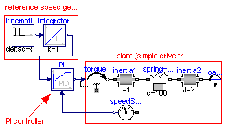
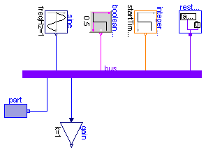

This package contains example models to demonstrate the usage of package blocks.
| Name | Description |
|---|---|
| Demonstrate usage of the Continuous.LimPID controller | |
| Demonstration of signal bus usage |
 Modelica.Blocks.Examples.PID_Controller
Modelica.Blocks.Examples.PID_Controller
This is a simple drive train controlled by a PID controller:
The PI controller settings included "limitAtInit=false", in order that the controller output limits of 12 Nm are removed from the initialization problem.
The PI controller is initialized in steady state (initType=SteadyState) and the drive shall also be initialized in steady state. However, it is not possible to initialize "inertia1" in SteadyState, because "der(inertia1.phi)=inertia1.w=0" is an input to the PI controller that defines that the derivative of the integrator state is zero (= the same condition that was already defined by option SteadyState of the PI controller). Furthermore, one initial condition is missing, because the absolute position of inertia1 or inertia2 is not defined. The solution shown in this examples is to initialize the angle and the angular acceleration of "inertia1".
In the following figure, results of a typical simulation are shown:


In the upper figure the reference speed (= integrator.y) and the actual speed (= inertia1.w) are shown. As can be seen, the system initializes in steady state, since no transients are present. The inertia follows the reference speed quite good until the end of the constant speed phase. Then there is a deviation. In the lower figure the reason can be seen: The output of the controller (PI.y) is in its limits. The anti-windup compensation works reasonably, since the input to the limiter (PI.limiter.u) is forced back to its limit after a transient phase.
| Type | Name | Default | Description |
|---|---|---|---|
| driveAngle | 1.57 | [rad] |
model PID_Controller
"Demonstrate usage of the Continuous.LimPID controller"
extends Modelica.Icons.Example;
parameter Modelica.SIunits.Angle driveAngle=1.57;
Modelica.Blocks.Continuous.LimPID PI(
k=100,
Ti=0.1,
yMax=12,
Ni=0.1,
initType=Modelica.Blocks.Types.Init.SteadyState,
limitsAtInit=false,
controllerType=Modelica.Blocks.Types.SimpleController.PI);
Modelica.Mechanics.Rotational.Inertia inertia1(initType=Modelica.Mechanics.
Rotational.Types.Init.InitialAngleAcceleration);
Modelica.Mechanics.Rotational.Torque torque;
Modelica.Mechanics.Rotational.SpringDamper spring(c=1e4, d=100,
initType=Modelica.Mechanics.Rotational.Types.Init.SteadyState,
stateSelection=Modelica.Blocks.Types.StateSelection.Prefer);
Modelica.Mechanics.Rotational.Inertia inertia2(J=2);
Modelica.Blocks.Sources.KinematicPTP kinematicPTP(startTime=0.5, deltaq={
driveAngle});
Modelica.Blocks.Continuous.Integrator integrator(initType=Modelica.Blocks.
Types.Init.InitialState);
Modelica.Mechanics.Rotational.Sensors.SpeedSensor speedSensor;
Modelica.Mechanics.Rotational.ConstantTorque loadTorque(tau_constant=10);
equation
connect(spring.flange_b,inertia2. flange_a);
connect(inertia1.flange_b, spring.flange_a);
connect(torque.flange_b, inertia1.flange_a);
connect(kinematicPTP.y[1], integrator.u);
connect(speedSensor.flange_a, inertia1.flange_b);
connect(loadTorque.flange, inertia2.flange_b);
connect(PI.y, torque.tau);
connect(speedSensor.w, PI.u_m);
connect(integrator.y, PI.u_s);
end PID_Controller;
Modelica.Blocks.Examples.ShowLogicalSources
model ShowLogicalSources
extends Modelica.Icons.Example;
Sources.BooleanTable table(table={2,4,6,8});
Sources.BooleanConstant const;
Sources.BooleanStep step(startTime=4);
Sources.BooleanPulse pulse(period=1.5);
Sources.SampleTrigger sample(
period=0.5);
Sources.BooleanExpression booleanExpression(
y=pulse.y and step.y);
end ShowLogicalSources;
Modelica.Blocks.Examples.LogicalNetwork1
model LogicalNetwork1
extends Modelica.Icons.Example;
Sources.BooleanTable table2(table={1,3,5,7});
Sources.BooleanTable table1(table={2,4,6,8});
Logical.Not Not1;
Logical.And And1;
Logical.Or Or1;
Logical.Pre Pre1;
equation
connect(table2.y, Not1.u);
connect(And1.y, Or1.u2);
connect(table1.y, Or1.u1);
connect(Not1.y, And1.u1);
connect(Pre1.y, And1.u2);
connect(Or1.y, Pre1.u);
end LogicalNetwork1;
Modelica.Blocks.Examples.BusUsage
Signal bus concept
In technical systems, such as vehicles, robots or satellites, many signals are exchanged between components. In a simulation system, these signals are usually modelled by signal connections of input/output blocks. Unfortunately, the signal connection structure may become very complicated, especially for hierarchical models.
The same is also true for real technical systems. To reduce complexity and get higher flexibility, many technical systems use data buses to exchange data between components. For the same reasons, it is often better to use a "signal bus" concept also in a Modelica model. This is demonstrated at hand of this model (Modelica.Blocks.Examples.BusUsage), see diagram layer:
Difficulties arise if the input or output connector of an input/output block shall be connected directly to a variable of a bus because connections can only be performed between connectors but not between variables. For convenience, single variable connectors for Real, Integer and Boolean variables are provided as Modelica.Blocks.Interfaces.RealSignal, Modelica.Blocks.Interfaces.IntegerSignal, Modelica.Blocks.Interfaces.BooleanSignal. For example, the RealSignal connector is basically defined as:
connector RealSignal = Real;
This allows a definition of a bus in the form:
connector Bus
RealSignal r1;
RealSignal r2;
...
end Bus;
and a connection to r1 and r2 is possible since these are connectors. Unfortunately, signals defined in this way have, by default, no unit. To improve this situation, a RealSignal is actually defined as
connector RealSignal
replaceable type SignalType = Real;
extends SignalType;
end RealSignal;
This allows a redeclaration of the Real type to the desired type, such as:
connector Bus
import SI=Modelica.SIunits;
RealSignal v(redeclare SignalType=SI.Velocity);
RealSignal p(redeclare SignalType=SI.Pressure);
...
end Bus;
Note, since RealSignal, RealInput and RealOutput have basically the same definition, it is possible to directly connector from a RealSignal of a bus to a RealInput or RealOutput of a block component.
If a bus connector contains many signals it is no longer so easy to test just one part of a system, because all parts of the bus connector must get a value. To simplify this, it is practical to provide a RestBus component which sets all parts of a bus to a default value when selected via the parameter menu. This is also demonstrated in the example model (see diagram layer).
Simulate the system for 1 s. The output of the "gain" block should be the same as the one from the "generateRealSignal1" block.
encapsulated model BusUsage "Demonstration of signal bus usage"
import Modelica.Icons;
import Modelica.Blocks.Interfaces.Adaptors;
import Modelica.Blocks.Sources;
import Modelica;
extends Icons.Example;
protected
Interfaces.Bus bus;
public
RestBus restBus(set_realSignal2=true);
Sources.IntegerStep integerStep(
height=1,
offset=2,
startTime=0.5);
Sources.BooleanStep booleanStep(startTime=0.5);
Sources.Sine sine;
encapsulated package Interfaces
"Interfaces specialised for this example"
connector MultiPort "Combined port of real and boolean signal"
Real myRealSignal;
Boolean myBooleanSignal;
end MultiPort;
connector Bus "Signal bus"
import SI = Modelica.SIunits;
import Modelica.Blocks.Interfaces.*;
RealSignal realSignal1(redeclare type SignalType = SI.AngularVelocity)
"First Real signal (angular velocity)";
RealSignal realSignal2 "Second Real signal";
IntegerSignal integerSignal "Integer signal";
BooleanSignal booleanSignal "Boolean signal";
MultiPort multiSignal "Combined signal";
end Bus;
end Interfaces;
encapsulated model Part "Component with MultiPort connector"
import Modelica.Blocks.Examples;
Examples.BusUsage.Interfaces.MultiPort multiSignal;
equation
multiSignal.myRealSignal = time;
multiSignal.myBooleanSignal = time > 0.5;
end Part;
encapsulated model RestBus
"Set default values for bus variables that are not defined elsewhere"
import Modelica.Blocks.Examples;
parameter Boolean set_realSignal1=false
"Set dummy value for desiredThrottle";
parameter Boolean set_realSignal2=false "Set dummy value for brake";
parameter Boolean set_integerSignal=false
"Set dummy value for controlLeverPosition";
parameter Boolean set_booleanSignal=false "Set dummy value for desiredGear";
parameter Boolean set_multiSignal=false "Set dummy value for ignition";
Examples.BusUsage.Interfaces.Bus bus;
equation
if set_realSignal1 then
bus.realSignal1 = 0;
end if;
if set_realSignal2 then
bus.realSignal2 = 0;
end if;
if set_integerSignal then
bus.integerSignal = 0;
end if;
if set_booleanSignal then
bus.booleanSignal = false;
end if;
if set_multiSignal then
bus.multiSignal.myRealSignal = 0;
bus.multiSignal.myBooleanSignal = false;
end if;
end RestBus;
Part part;
Modelica.Blocks.Math.Gain gain;
equation
connect(restBus.bus, bus);
connect(part.multiSignal, bus.multiSignal);
connect(sine.y, bus.realSignal1);
connect(booleanStep.y, bus.booleanSignal);
connect(integerStep.y, bus.integerSignal);
connect(gain.u, bus.realSignal1);
end BusUsage;

| Type | Name | Default | Description |
|---|---|---|---|
| set_realSignal1 | false | Set dummy value for desiredThrottle | |
| set_realSignal2 | false | Set dummy value for brake | |
| set_integerSignal | false | Set dummy value for controlLeverPosition | |
| set_booleanSignal | false | Set dummy value for desiredGear | |
| set_multiSignal | false | Set dummy value for ignition |
| Type | Name | Description |
|---|---|---|
| bus |
encapsulated model RestBus
"Set default values for bus variables that are not defined elsewhere"
import Modelica.Blocks.Examples;
parameter Boolean set_realSignal1=false "Set dummy value for desiredThrottle";
parameter Boolean set_realSignal2=false "Set dummy value for brake";
parameter Boolean set_integerSignal=false
"Set dummy value for controlLeverPosition";
parameter Boolean set_booleanSignal=false "Set dummy value for desiredGear";
parameter Boolean set_multiSignal=false "Set dummy value for ignition";
Examples.BusUsage.Interfaces.Bus bus;
equation
if set_realSignal1 then
bus.realSignal1 = 0;
end if;
if set_realSignal2 then
bus.realSignal2 = 0;
end if;
if set_integerSignal then
bus.integerSignal = 0;
end if;
if set_booleanSignal then
bus.booleanSignal = false;
end if;
if set_multiSignal then
bus.multiSignal.myRealSignal = 0;
bus.multiSignal.myBooleanSignal = false;
end if;
end RestBus;

| Type | Name | Description |
|---|---|---|
| multiSignal |
encapsulated model Part "Component with MultiPort connector" import Modelica.Blocks.Examples; Examples.BusUsage.Interfaces.MultiPort multiSignal; equation multiSignal.myRealSignal = time; multiSignal.myBooleanSignal = time > 0.5; end Part;